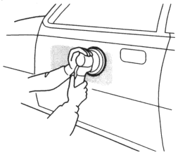
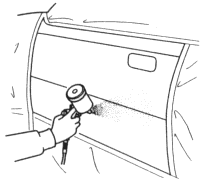
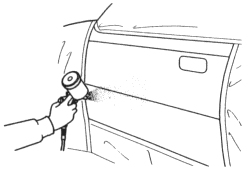

- Polishing
Check that the top coat enamel has dried thoroughly, then sand the top coat enamel.
| Use the double action sander and #600~#800 disc papers. |
NOTE: Be careful not to polish down to the primer surfacer.

When the painting repair (gradation) is almost done, polish the area that will be top coated.
| Use the #2000 sandpaper and compound. |
- Air blowing/degreasing
| Use alcohol, wax and grease remover. |
Also clean and degrease surfaces where the masking tap will be attached.
NOTE: See pages 6-11, 6-12 for the painting repair (gradation) of the 3-coat pearl paint.
- Masking
Mask the area surrounding the damage to prevent over spray from the top coat.
| Use masking tape and paper. |
- Spraying top coat enamel/clear coat
Spray 2~3 double coat until the intermediate coat is fully covered.
NOTE: See pages 6-11, 6-12 for the painting repair (gradation) of the 3-coat pearl paint.
|

Drying
After spraying the top coat enamel, allow it to air dry, then force dry it with infrared lamps or other industrial dryer.
NOTE: Follow the top coat manufacturer's instructions for drying time.
Spraying clear coat
Spray the top clear coat evenly over the surface of the top coat enamel. Do not try to cover the surface with one heavy coat.
